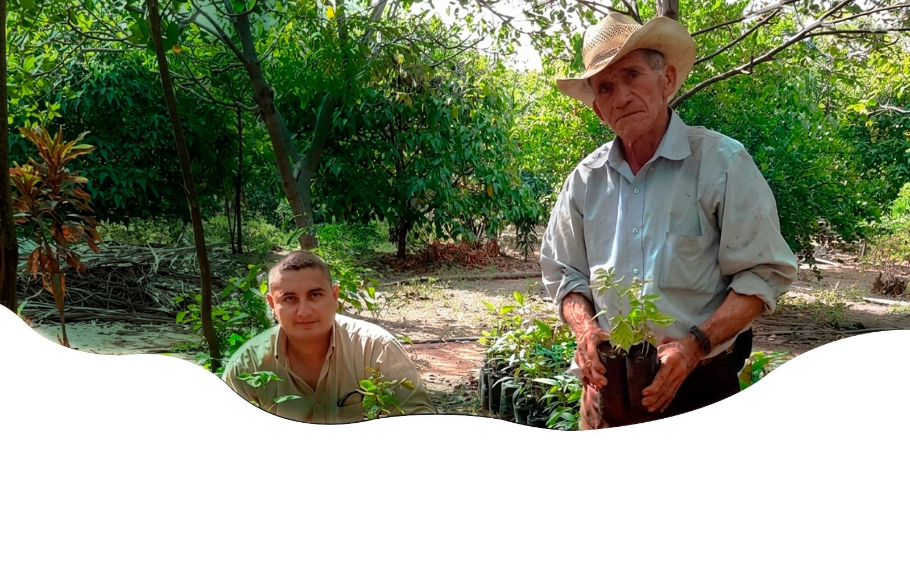
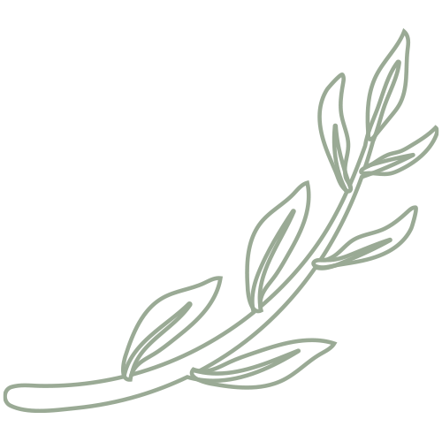
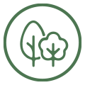
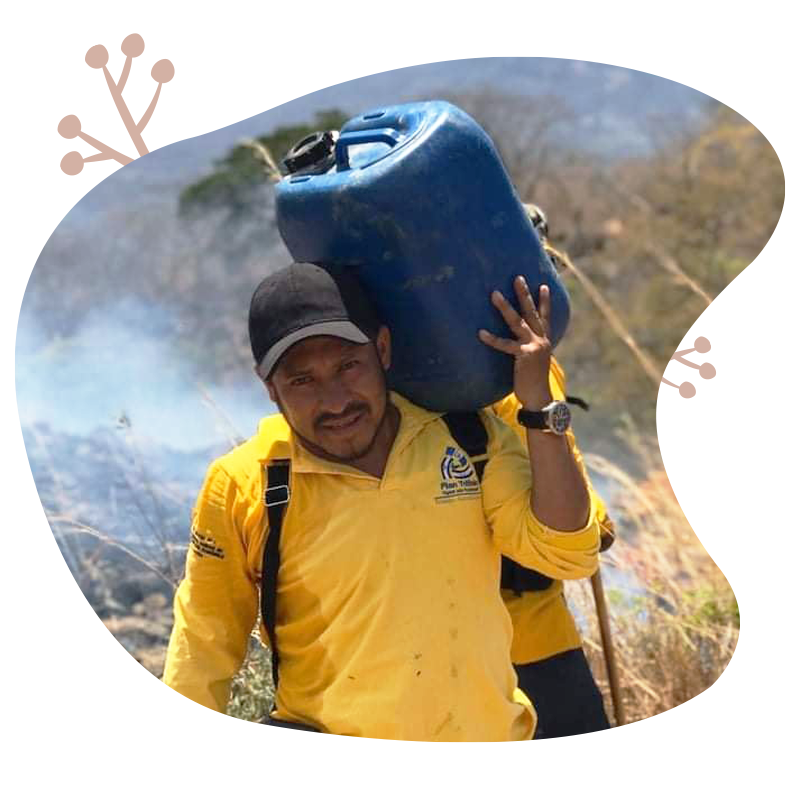
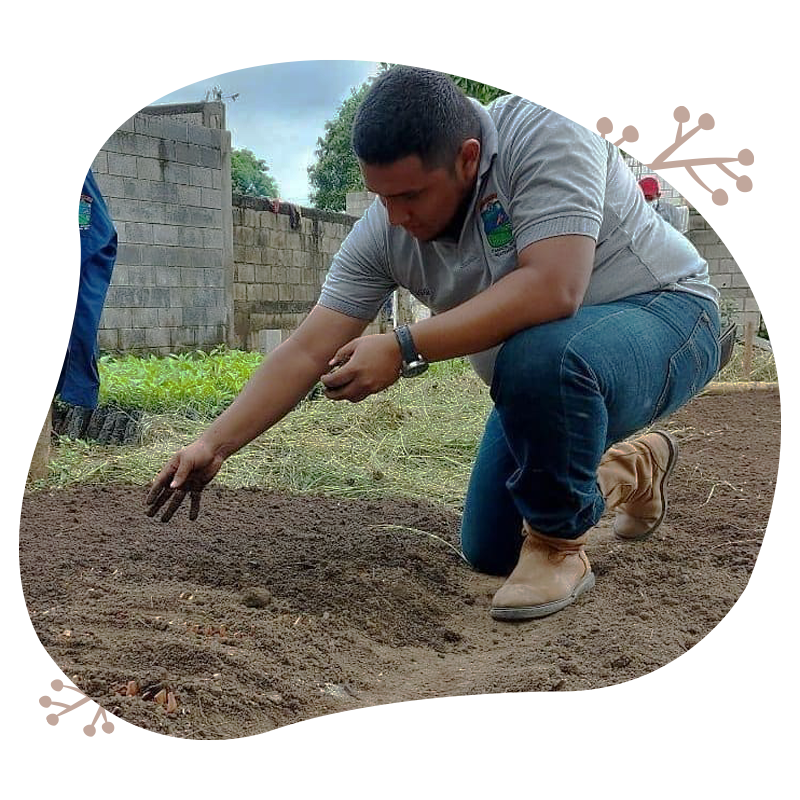
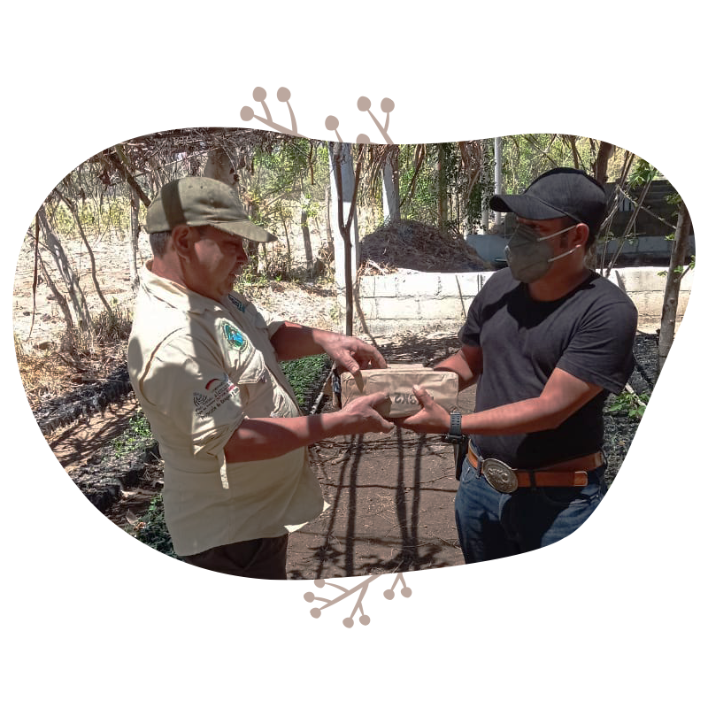

Nuestro objetivo es promover la conservación del medio ambiente a través de acciones locales y globales. Trabajamos en diferentes proyectos de reforestación, limpieza de playas y ríos, educación ambiental, limpieza de áreas naturales y otras actividades en pro planeta.



Compromiso con la causa: Si te importa el medio ambiente y quieres contribuir a su preservación, eres el tipo de persona que buscamos. Tu motivación es clave para que nuestros proyectos sean exitosos.
Disponibilidad: Buscamos voluntarios con al menos 4 horas libres a la semana para colaborar en diferentes actividades, ya sea de campo o en oficina (dependiendo del proyecto).
Trabajo en equipo: El trabajo colaborativo es fundamental para lograr un impacto positivo. Debes ser capaz de trabajar junto con otros voluntarios y con nuestros coordinadores de proyectos.
Conocimientos básicos: Aunque no es imprescindible, si tienes experiencia previa en temas ambientales, ¡es un plus! Nos gustaría que pudieras aportar ideas frescas y soluciones innovadoras. (No es obligatorio)
Actitud positiva: La constancia y el compromiso son esenciales para el éxito de cada proyecto. Se requiere que los voluntarios lleguen puntuales a las actividades y cumplan con sus responsabilidades.



Experiencia en proyectos ambientales: Participarás en actividades y proyectos reales que marcan una diferencia tangible en el medio ambiente.
Capacitación y formación: Ofrecemos talleres y cursos sobre temas ambientales, como reciclaje, cambio climático, biodiversidad, entre otros.

Certificado de voluntariado: Al finalizar tu periodo de voluntariado, recibirás un certificado que acredita tu participación y el impacto generado.

Red de contactos: Conocerás a personas que comparten tus mismos intereses y valores, y podrás hacer parte de una comunidad que busca un futuro más sostenible.

Satisfacción personal: Ser parte activa de un movimiento global para proteger el medio ambiente tiene un impacto positivo en ti y en tu comunidad.